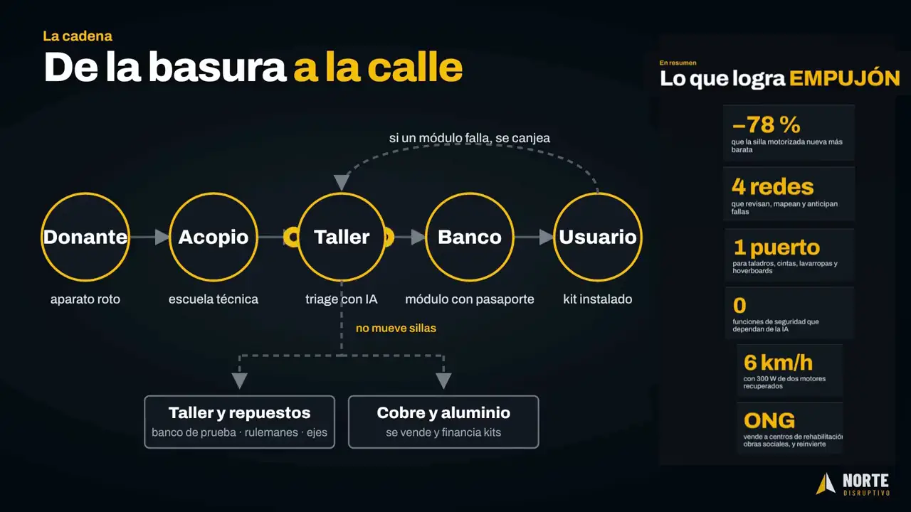
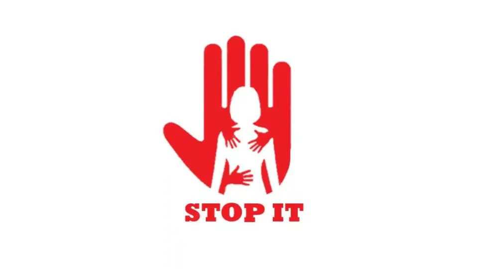
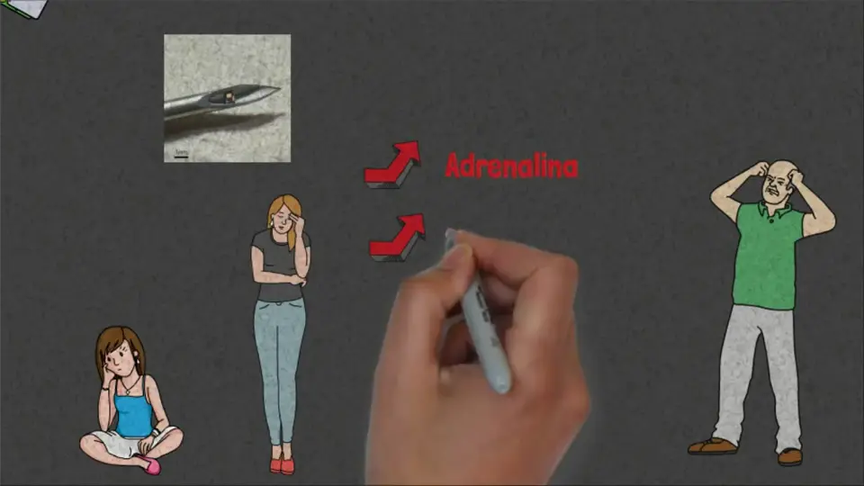
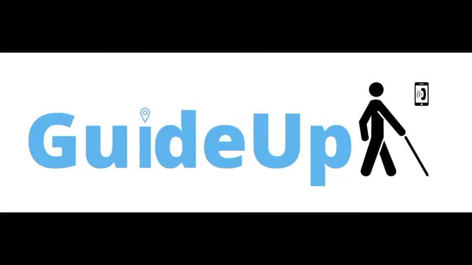
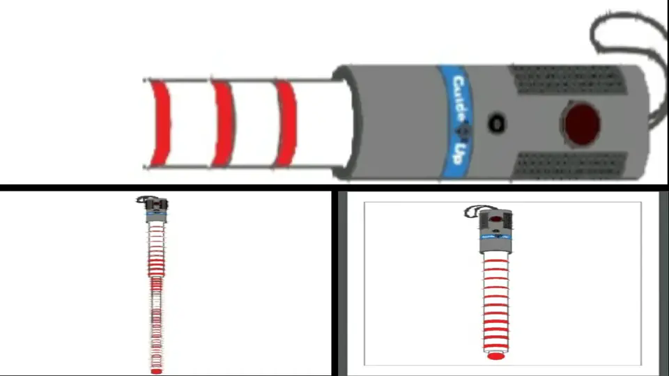

Beyond work: on stage and pitching ideas
Alongside engineering, I keep volunteering for the part of a project many engineers avoid: standing up and explaining it. Graduate commencement speaker at Bradley University, and three Latin American Innovation Rally pitches with my teams.
Why it’s here
Engineering work gets approved when someone can explain it clearly. These are the times I chose to do that in front of an audience, outside my job.
What I did
Gave the graduate commencement speech at Bradley University, and pitched three ideas with my teams in the Latin American Innovation Rally: a wheelchair motor kit, a domestic-violence alert concept and a smart cane.
Result
Spoke for the Spring 2025 master’s and doctoral graduates; 1st place at provincial level in the 2021 rally; participated in 2020 and 2026.
01Commencement speech
Graduate Commencement Speaker, Bradley University · May 2025. I spoke at the Spring 2025 Master’s & Doctoral Commencement, graduating with an M.S. in Manufacturing Engineering (GPA 4.0) and the Marjorie Reynolds Award for academic excellence.
What it was about: from Tucumán to Bradley — looking back to understand the path and forward to keep going; gratitude to the people and the community behind us; what I learned by teaching as a TA (“when you’re teaching, you end up learning even more from your students”); and a call to my fellow graduates: don’t be afraid to try.
The video at the top of this page plays only my speech (about 7 minutes, in English).
02The innovation rallies
The Latin American Innovation Rally is a competition where teams pitch a solution to a challenge in a short video, about two minutes long. I took part three times, with teams from Tucumán, Argentina. All three videos are in Spanish; the stills below are taken from them.
These were competition entries, not companies. None of them is a venture I’m running.
032026 · EMPUJÓN
- Team
- Norte Disruptivo
- Result
- Participation
- Video
- in Spanish · ~2 min
The idea: a kit that motorises the wheelchair a person already has, using motors recovered from discarded appliances — the pitch shows drills, treadmills, washing machines and hoverboards. It has three parts: an EMP-1 port fixed to the chair without welding or drilling, a motor module built around the recovered motor, and a battery and control unit made from recovered cells, with a BMS and sensors. Modules click into the port in seconds, without tools.
The pitch also covers a chain from donor to user (collection, a workshop that triages modules, a “bank” of modules) and a companion app.
Figures as stated in the pitch. They are the team’s pitch numbers, not measured results.
Full pitch on YouTube · in Spanish

042021 · STOP IT
- Team
- Innovación Picante
- Result
- 1st place, provincial level
- Video
- in Spanish · ~2 min
The idea: a technology-based solution to address domestic violence. A tiny sensor detects the body’s stress response (an adrenaline spike) and the STOP IT device alerts an emergency operator. Our team from Tucumán won 1st place at the provincial level.
Full pitch on YouTube · in Spanish


052020 · GuideUp
- Team
- Innovación Picante
- Result
- Participation
- Video
- in Spanish · ~2 min
The idea: GuideUp, a smart white cane for people who are blind or have low vision, paired with a phone app that uses GPS and Bluetooth.
Full pitch on YouTube · in Spanish


06What this says about how I work
- I explain technical ideas to people who aren’t engineers, in English and in Spanish, in a few minutes.
- I pick up problems nobody assigned me and work them through with a team, from the idea to something people can see.
- Engineering stays the day job. My main work is in industrial projects and the software I build for them.